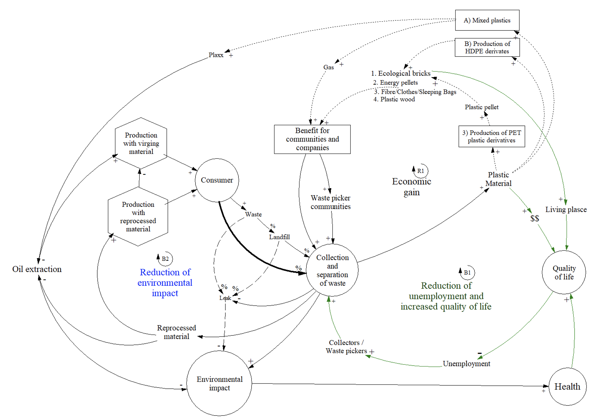

Sustainable Plastic Industry
The problem
The relationship that humans have with plastics could be defined as a double-edged sword. On the one hand, plastic properties have provided a massive advantage to some industries. Plastics can be flexible, inexpensive, lightweight, and durable, making them, in many cases, outflank other materials. On the other hand, this versatility has provided its popularity and consequently its increasing demand and consumption, resulting in plastic becoming a victim of its own success. In the last 50 years, its use has increased 20 times and is expected to double again in the next 20 years. Especially plastic packaging (The Ellen MacArthur Foundation, 2019).
Consequently, the way we use plastics has become incredibly wasteful, with many items being disposed of after one use. In many cases, the material leaks into the environment, polluting land, rivers and reaching the ocean (The Ellen MacArthur Foundation, 2020). It is calculated that about 32% of the produces plastic packaging escapes from collection systems and generates high costs by reducing the natural systems’ productivity. In a nutshell, the problem with plastic lies in its operating paradigm—a linear system.
In contrast to a linear system, we aim to shift towards a circular economy for plastic. In other words, to transition from innovating products to innovating systems, from linear chains to circular value systems, and from the extraction of natural materials to the environment’s recovery.
The proposed model
Conventional treatment of plastic waste is mainly focused on recycling, which brings plastic back into the value chain. Although this solution is economically attractive, it is not a truly innovative solution, and the benefits are very sensitive to the oil market price. Furthermore, this solution only brings financial benefits to a limited amount of stakeholders. Based on the SWIT theoretical framework (Scheel, 2016). The SWIT holistic approach enables the creation of new business/region models that are economically viable, socially equitable and responsible, and environmentally recoverable.
R1. Economic gain for stakeholders: By increasing the production of plastic (e.g., virgin bottles or recycled bottles), the purchase of new containers increases. Therefore, consuming more containers generates more waste. In this sense, increasing plastics collection and sorting allows for more reintegration of the discarded plastic back into the system. The plastic material can be monetarized by creating plastic banks, creating an economic profit for the communities. This plastic can be sold to the producers or to organizations in charge of plastic derivates’ production.
On the other hand, the plastic material can also be used to increase the production of other plastic products, increasing the communities’ utility. The reprocessed plastic can increase the production of plastic bricks, or it can also be transformed into energy pellets (biomass) that can be used for fuel and to produce energy. This energy can be used for brick production. Alternative uses can be proposed depending on the regional needs and context. The production of bricks can be used to produce houses within the collecting communities. The more housing, the more possibility of growing and solidifying the collecting communities. The more collector communities, the more collection, and sorting. Moreover, the greater the processed material, the lower the demand for containers made with virgin oil and the lower the environmental impact.
Furthermore, a part of the plastic material can be destined to create plastic lumber that can be used to build boats (marine lumber) or other derivative products such as textiles or clothing. Other parts of the plastic material can be converted into plastic pellets. All these products build resilience and generate economic profit for the communities. The more the economic profit, the more solid the collector communities (which increases the collection and the separation and reinforces this cycle-R1).
B1. Reduction of unemployment and the increase of the quality of life: Higher unemployment leads more citizens to work as waste collectors. These collectors’ communities give value to plastic since they receive a diverse number of benefits for delivering the material. A more significant number of collectors lead to an increase in plastic collection and sorting efforts: the more plastic collected and sorted, the more plastic material. The more material collected, the more income for the collector. Moreover, the more material collected, the less environmental impact and greater health improvements within the communities. Furthermore, the more plastic material, the more material that can be used to produce plastic derivatives within the collecting communities, increasing the people’s income. An increase in family income, an increase in housing, and an increase in health increase the quality of life of the communities, which leads to lower unemployment and a lower number of collectors –improving the standard of living of the inhabitants in the long term.
B2. Environmental Impact Reduction: By increasing the production of plastic (e.g., virgin bottles), the purchases of new containers increase (consumers). Therefore, consuming more containers generates more waste. The consumer takes a percentage of these discarded containers to collection and separation centers. Another percentage is discarded as general waste and taken to landfills.
Additionally, during waste transport, a percentage of this waste leaks from the collection system. The more leakage of waste, the more the environmental impact. Finally, another percentage of waste remains indefinitely in landfills where it can also leak from the system causing environmental impact. On the other hand, the more plastic waste is collected, the less the environmental impact. Furthermore, the more collection of plastic, the more plastic for reprocessing material. The more reprocessing material, the less demand for producing plastic from virgin resources—the less new plastics are produced and the less extraction of natural raw materials (oil). Therefore, the demand for containers can be fully covered using more reprocessed material, reducing both the extraction of oil and the environmental impact.